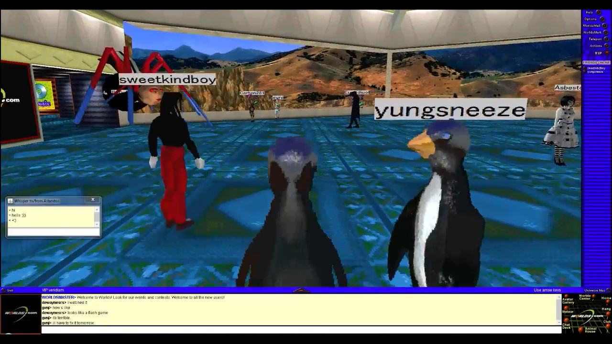
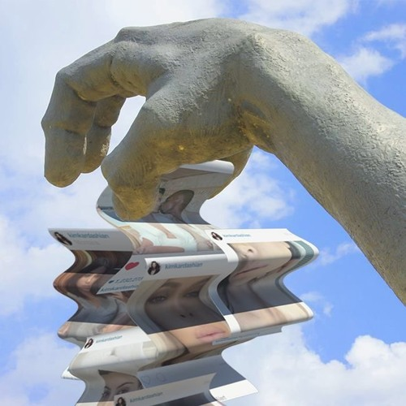
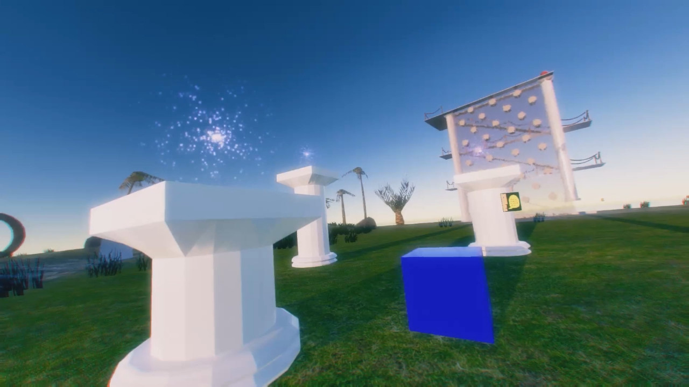
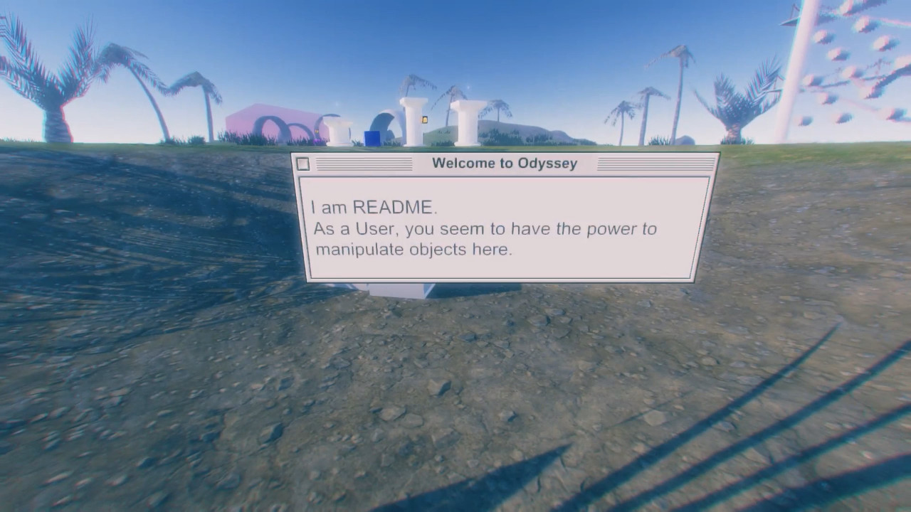
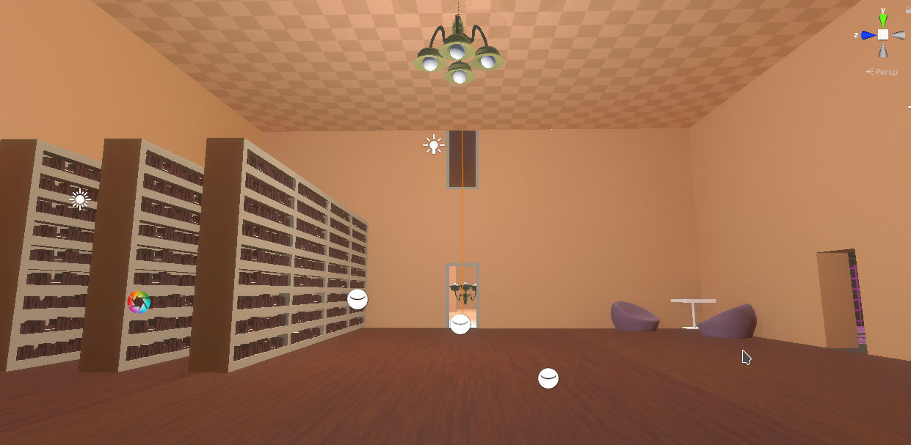
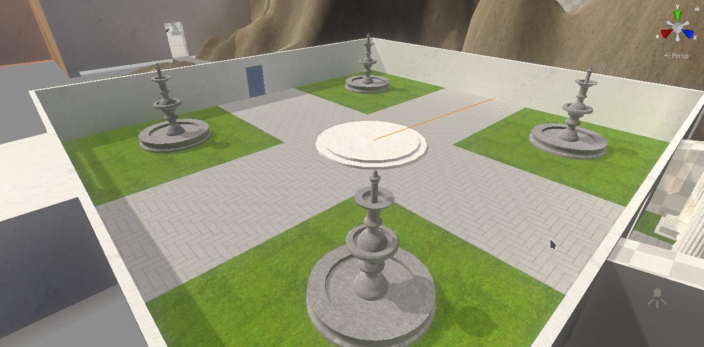
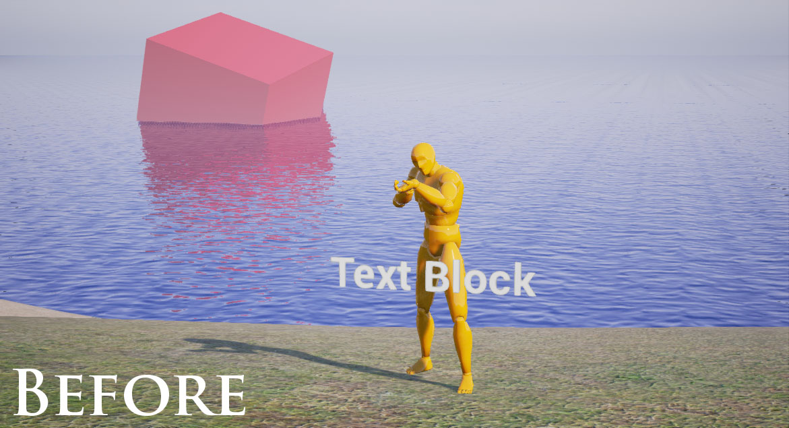
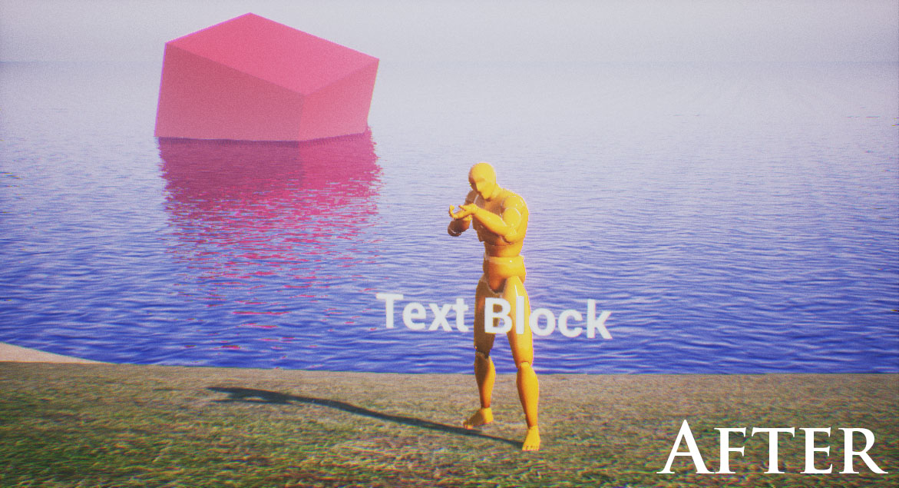
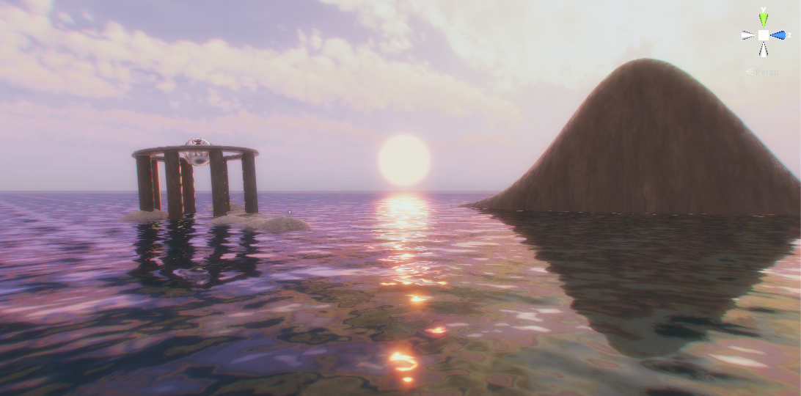
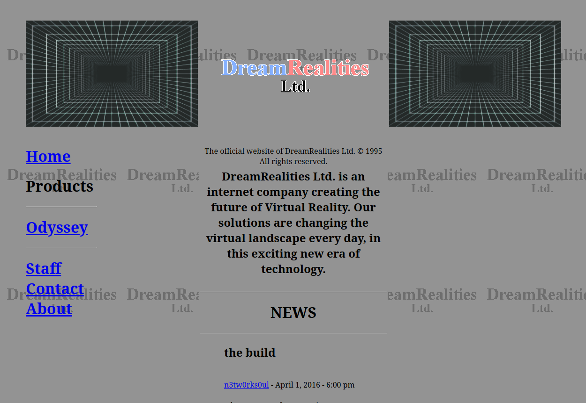

Imagine exploring an ancient unreleased virtual reality simulation from the 1990's. What secrets would it hold? Odyssey Virtual is a computer game in ongoing development that explores this concept. Set in the vaporware creation of an obscure dot-com bubble company, players unravel its mysteries through puzzle-platforming gameplay and environment-based storytelling.
My role in this project has involved everything from programming to animation to narrative, gameplay, and sound design. This article will focus on the gameplay design and programming aspects.
Concept
My goal in developing Odyssey Virtual is to create an immersive and plausible narrative world. When the player plays this game, they aren't stepping into the role of a fictional character. They play themselves, and their motivations and goals are no different. It made sense, then, to match the narrative world with reality. In reality, the player downloads and installs a game and plays it, usually out of curiosity for what experiences lie in that game. The setting should be a game world, or a virtual world of some kind.

The strange, still functioning world of Worlds.com
Inspired by the new music phenomenon "Vaporwave", as well as my own experiences exploring an old virtual chatroom called Worlds.com, I started to develop the concept.

Vaporwave combined aesthetics of early computer art with heavily manipulated sample music.
I began by testing post-process color LUTs in Unreal Engine 4 to try to nail a look. I wanted to see if it was possible to achieve a VHS quality, inspired by films such as The Mind's Eye (1990). Eventually, I migrated the project to Unity and began to write shaders - exploring the possibility of recreating the look of old pre-rendered CGI in realtime.
Exploration of shapes and colors.
Eventually, I wanted to develop a way to distort the player's sense of space. In virtual reality, perhaps a doorway of a small building would lead to a much larger interior space. One of the aspects I love most about game development is the fakery and trickery behind the scenes, like a great magic trick or special effect. I programmed a portal system which would allow me to link spaces in this way.
A portal effect, which toys with they player's sense of space by producing non-Euclidean geometry.
The First Project

The first project presented simple physics puzzles solved by manipulating and duplicating objects.
For the class IAT-410, my group went with my pitch to do a small scale version of Odyssey Virtual as a puzzle platformer.
Credits:
Alex Mason - Programming and Gameplay Design, Trailer
Mark Wakeham - Puzzle Design
Dylan McIntyre - Art and Puzzle Design
Gillian Ramsay - Additional Modeling
In this project I explored and implemented various game interactions, such as the ability for players to copy-and-paste objects. We looked at ways to translate familiar computer tools to gameplay elements. While this approach fit the theme, it didn't hit the gameplay mark we had hoped. Players did not find the process of pressing ctrl+c ctrl+v engaging or interesting – it essentially amounted to an unintuitive way to clone objects.
Our design pivoted towards a more traditional puzzle-platformer while maintaining the world and theme. During this phase, I still wanted to bring some kind of novel aspects that sold this world as an old virtual reality. I implemented a fully working SMTP email client as a building players could visit in the game. Floating windows allowed the entry of authentication information and email content. While this had no gameplay impact, play testers responded positively. Bridging the gap between game and software turned out to be an interesting direction worth exploring further.

Floating windows in the world would expand and iconify.
Second Iteration and VR
Demonstration of portal physics with gravity alteration.
Currently under development for IAT-445, my group wanted to utilize my work with portals to create a VR puzzle game. This iteration focuses on unique gameplay elements of portals such as using them to scale objects and the player up and down, and bending the laws of gravity.
Credits:
Alex Mason - Programming, Gameplay Design, Level Design
Emily Johnston - Puzzle and Level Design
Patrick Klosowski - Modeling and Animation
Averi Balleza - Modeling, Texturing and Set Dressing
This project is designed to work with the Oculus Rift VR Headset, and as such needed to be developed from the ground-up. Portals, which utilized a RenderTexture, now needed to be rendered for each eye, and required a significant rewrite. Portals also needed to be easily rotated and scaled up and down to allow for this new gameplay. With some matrix manipulation, I now have portals that the level designers can simply place in the level, and scale up and down as needed.
Demonstration of portal physics with scale alteration.
When a portal doorway is linked to a portal which is sideways along the wall, the player and objects that pass through it will have their direction of gravity changed. The effect is as you would expect walking through any door.

A chandelier hangs from the ceiling viewable through the portal to help players discover the rules of portals.
I created a wrapper around Unity's physics to deal with the way gravity needed to work in this system. Each physics object has a gravity direction that can be modified by portals. This has the added advantage of being able to do all kinds of things with gravity, such as a small planet the player can walk around.
An example of a small planet with its own gravitational force.
With these systems in place, we are in the process of creating environments and challenges that bend the player's sense of space. After the completion of this project, I intend to fold all the things I've developed and learned into a full product.

A courtyard, one of the first areas seen by our players.
Gallery


Early UE4 test of color filters using LUTs.

A procedural water shader. Designed to look repetitive to fit the early computer art aesthetic, yet also visually pleasing.

A satellite project for an interactive narrative class, I created a website for the fictional company responsible for Odyssey. Story elements are hidden in the website's source code. (Warning: website produces sound.)


{kind=link}